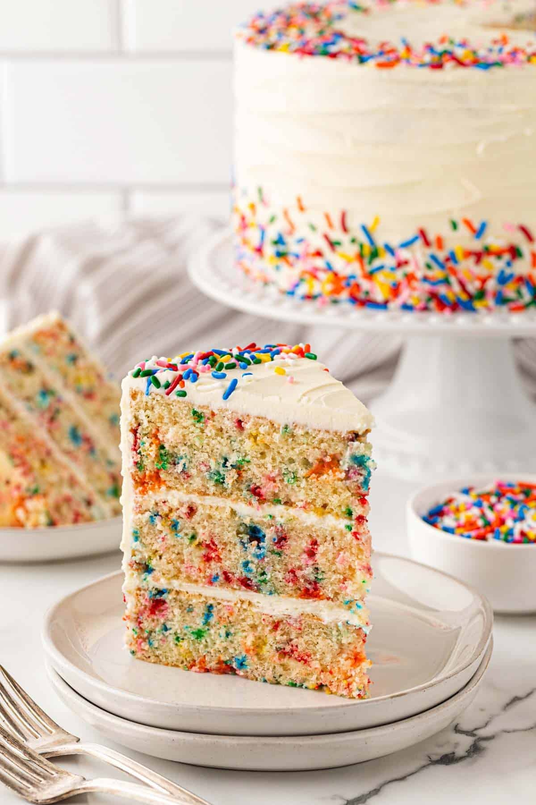

Vanilla Cake recipe

Description
A classic vanilla cake is a light, moist, and tender dessert centered around a rich, sweet, and aromatic vanilla flavor profile
Ingrediants
Receipe
- uté the Saaromatics and vegetables: Heat 1 tablespoon of oil or butter in a large skillet or wok over medium-high heat. Add the white onion, carrots, and peas. Cook for 2 to 3 minutes until tender, then add the garlic and white parts of the green onions for another 30 seconds.
- Scramble the eggs: Push the vegetables to one side of the pan. Pour the beaten eggs into the empty side and scramble them until softly set. Mix the cooked eggs together with the vegetables.
- Add the rice: Add the remaining tablespoon of oil or butter and the cold, day-old rice to the pan. Break up any clumps with a spatula.
- Season and toss: Drizzle the soy sauce, oyster sauce (if using), and white pepper over the rice. Stir-fry everything on high heat for 2 to 3 minutes until the rice is hot and well-coated.
- Finish and serve: Remove the pan from the heat. Stir in the toasted sesame oil and garnish with the green onion tops before serving immediately
Back